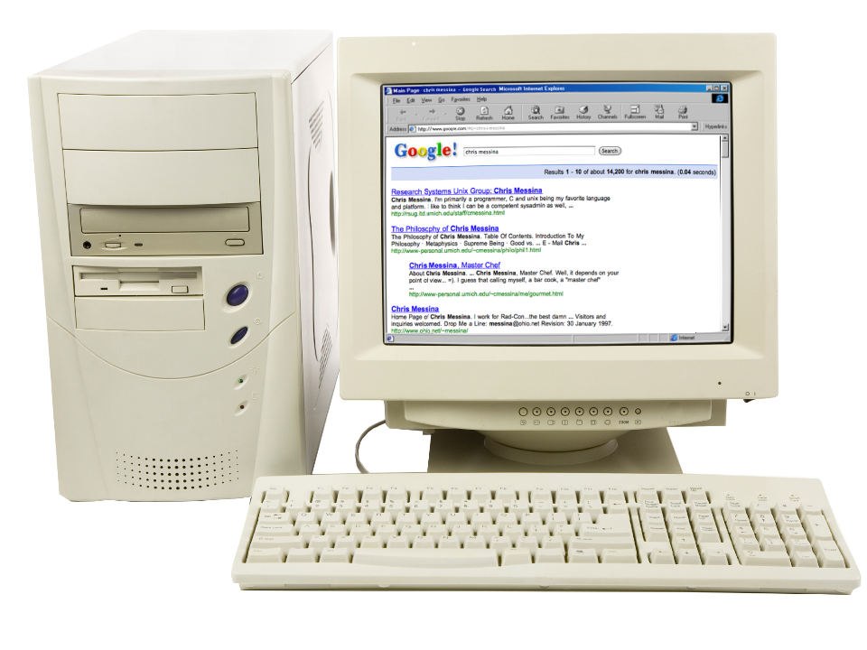
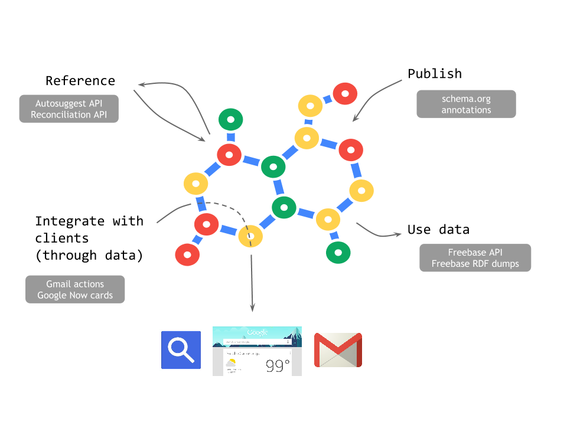

Ewa Gasperowicz
Developer Relations, Knowledge (Search)
- Google Custom Search
- Schema.org
- Knowledge Graph
- Czym są grafy wiedzy i dlaczego ich znaczenie rośnie
- Jak Google zbudował Graf Wiedzy i jakie technologie wykorzystuje
- Jak deweloperzy mogą na tym skorzystać
"Na naszych oczach korzystanie z informacji zmienia się dramatycznie"
Internet i wyszukiwanie w 1998
Internet i wyszukiwanie w przyszłości?
Wyszukiwanie tekstowe już nie wystarcza


Grafy wiedzy (nie tylko Google)
Graf Wiedzy Google składa się z milionów faktów
Do opisu grafu służy standard RDF (Resource Description Framework)
- Każdy fakt to tzw "trójka semantyczna":
- Podmiot - predykat - obiekt
Skąd się biorą fakty w Grafie Wiedzy?
- Gafowe bazy danych - Freebase
- Strony internetowe z semantycznym markupem
- Inne dokumenty, np email
Jak publikować semantyczne dane?
Potrzebne są
- Standardowe nazewnictwo
- Identyfikatory
- Standardowe formaty
Jak publikować semantyczne dane?
Potrzebne są
- Standardowe nazewnictwo
- Identyfikatory
- Standardowe formaty
Jak publikować semantyczne dane?
Potrzebne są
- Standardowe nazewnictwo
- Identyfikatory
- Standardowe formaty
Open ecosystem
With Schema.org

Jak publikować semantyczne dane?
Potrzebne są
- Standardowe nazewnictwo
- Identyfikatory
- Standardowe formaty
Jak publikować semantyczne dane?
Potrzebne są
- Standardowe nazewnictwo
- Identyfikatory
- Standardowe formaty
Jak publikować semantyczne dane?
Potrzebne są
- Standardowe nazewnictwo
- Identyfikatory
- Standardowe formaty
Reconciliation
Reconciliation
Reconciliation
Jak publikować semantyczne dane?
Potrzebne są
- Standardowe nazewnictwo
- Identyfikatory
- Standardowe formaty
A co ja mogę z tego mieć?

Jak korzystać z Grafu wiedzy?
Publikuj
Miksuj i korzystaj z danych
- Otwara i darmowa baza danych
- Każdy może edytować
- Jedno ze źródeł dla Grafu Wiedzy Google
- Można kopiować i używać lokalnie jako graf
- 42.9 milionów ludzi, miejsc i rzeczy
- 2.4B faktów (trójek)
Miksuj i korzystaj z danych
- Freebase maps video demo
- Wineland
- Gender Gap
Integruj z innymi produktami Google
Więcej: developers.google.com/schemas
Reference
Podsumowanie
Podsumowanie
Do poczytania
- Graf Wiedzy Google
- Freebase
- developers.google.com/schemas - dokumentacja semantycznej integracji z Google
- schema.org - wszystko o standardzie schema.org
<Dziękuję!>